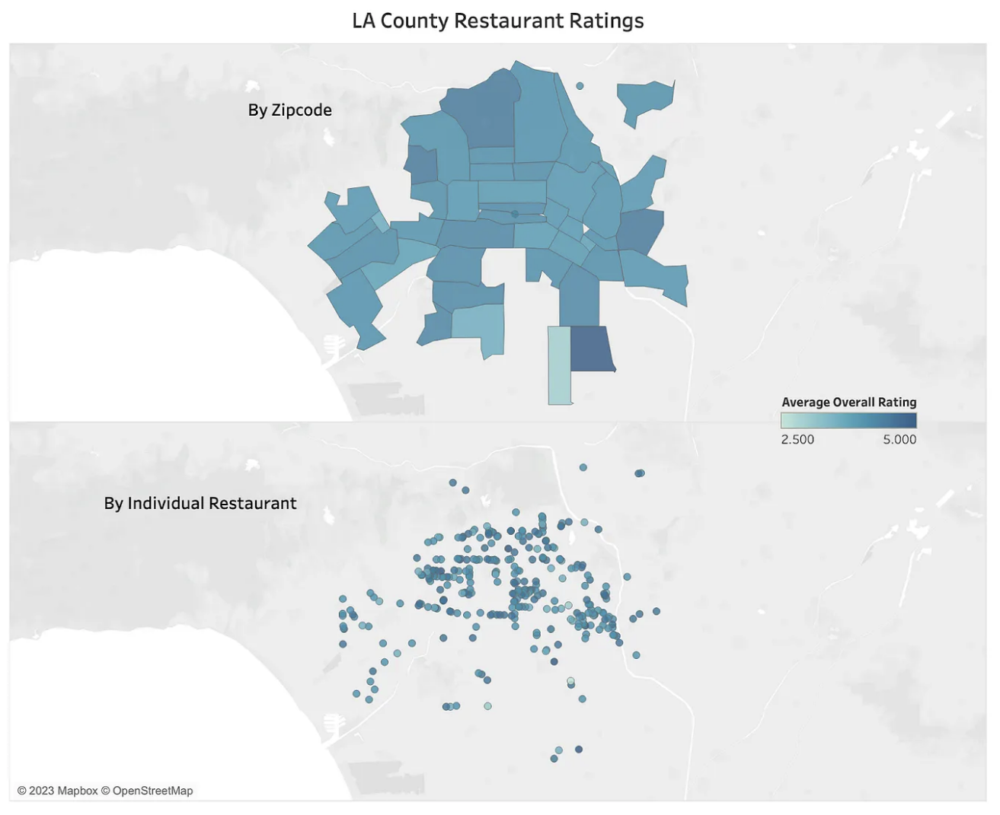

My Projects
LA Restaurant Analysis: Yelp Ratings and Health Grades

Collaborated in a 5-person team (+ project lead) to analyze Yelp rating and health inspection data for restaurants in Los Angeles and published data-driven article online to Medium.
Tools: python, pandas, matplotlib, sklearn, tableau
View our article hereWordle Solver


Fun tool used to find possible solutions to partially solved NYT Wordle puzzles. Eliminate letters, input known letters with known, potential, and unknown positions, and get a list of possible words!
Tools: python, nltk (natural language tool kit)
View GitHub repo here